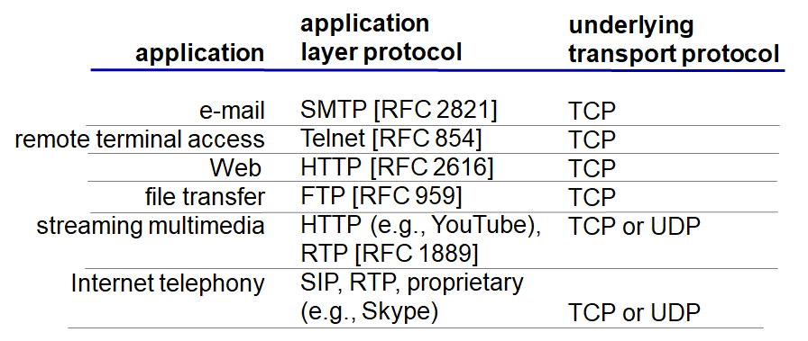

Computer Networking - Transport Layer Protocols
Computer-Netowork-Transport-Layer-Protocols
1. TCP 서비스
신뢰성 있는 전송
Flow control
- Sender가 메세지를 너무 빨리 보내지 않게 (Receiver가 데이터 처리가 느릴 경우 데이터 loss 없이 온전히 받을 수 있게) 전달하게 해줌
- Sender와 Receiver 1:1 관계
Congestion control
- 네트워크의 관계
- 각 Sender가 네트워크의 혼잡을 방지하기 위해 Sending 속도를 줄여줌
타이밍, 최소한의 Throughput, 보안 관련 서비스는 제공해주지 않음
Connection-oriented
- TCP는 우선 클라이언트 - 서버 상에 연결을 맺고 메세지를 주고받는다
2. UDP 서비스
신뢰성 있는 전송 보장해주지 않음
아무 서비스도 보장해주지 않는다
왜 쓰냐 그럼?
- 헤더 사이즈가 작고 빠르게 전송 가능
- 요즘 네트워크가 좋아져서 대부분 잘 가기 때문

12. TCP 프로토콜 보안 적용하기
TCP & UDP
- 메세지를 암호화하지 않음
SSL
- 별도의 라이브러리
- 암호화된 TCP 연결 제공
- 데이터 무결성
- 사용자 인증
SSL은 애플리케이션 레이어
- 유저 애플리케이션 밑에 SSL, 그 밑에 TCP